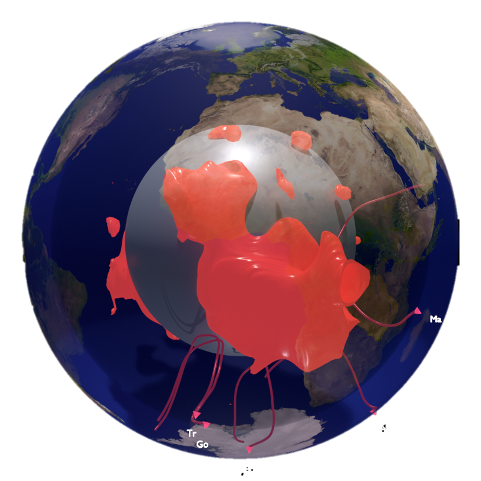

Exploring Earth's interior through computational geophysics

3D visualization of LLSVPs at the core-mantle boundary with backward-tracked particle trajectories from Indo-Atlantic hotspots
My research combines mantle geodynamics with isotope geochemistry to investigate the origin, transport, and longevity of chemical heterogeneity in Earth's interior. I use particle tracking in time-reversed convection models constrained by seismic tomography to link deep mantle processes with surface geochemical observations.
Key research areas include:
I work closely with the Institut de Physique du Globe de Paris (IPGP), where I spent June–December 2025 as an invited scientist, combining computational approaches with geochemical observations to create comprehensive models of Earth's internal dynamics.
University of Florida, Gainesville, FL
Thesis: Reconciling Hotspot Geochemistry with Mantle Dynamics through Particle Tracking
Advisor: Professor Alessandro Forte
Coursework and research in conjunction with the Institut de Physique du Globe de Paris (IPGP)
University of Florida, Gainesville, FL
Minors: Physics, Geology, Music Performance
Université Paris Diderot & Institut Catholique de Paris, Paris, France
Studied Literature, Astronomy, and conducted research in Second Language Acquisition
University of Florida
Developed advanced particle-tracking methods in 4D global mantle convection models integrating seismic tomographic and geochemical data. Research aims to clarify the origin and evolution of hotspot-related chemical anomalies by reconstructing mantle flow through geologic time.
Institut de Physique du Globe de Paris (IPGP), France
Worked with an international team on reconciling geochemical observations with mantle convection models.
University of Florida
Developed Python code for near-infrared photometry and photometric analysis as part of the Galactic Census of High and Medium-mass Protostars (CHaMP) under Dr. Peter Barnes.
Collège Robert Doisneau, Paris, France
Taught English to French middle school students and assisted in research on language pedagogy.
Under review
DOI: 10.21203/rs.3.rs-7827767/v1
This study uses Lagrangian particle tracking in time-reversed mantle convection models to trace South Atlantic DUPAL hotspots and Southwest Indian Ocean non-DUPAL hotspots back to two distinct paleo-subduction zones rather than the African LLSVP core. DUPAL signatures trace to southern Panthalassa margin subduction (250–180 Ma), while non-DUPAL hotspots trace to northern Paleo-Tethys subduction.
Under review
In preparation
In preparation
EGU General Assembly 2026, Vienna, Austria
EGU General Assembly 2025, Vienna, Austria
Ada Lovelace Workshop on Modelling Mantle and Lithosphere Dynamics, Sète, France
Goldschmidt 2022
AGU Fall Meeting 2021, New Orleans, LA
ID: DI44B-07
CoLlaborative Exploration of Earth's Deep Interior — international workshop on deep mantle structure and dynamics.
Advanced Solver for Planetary Evolution, Convection, and Tectonics
Development of numerical methods for tracking particles in 4D flow fields
Undergraduate research in star formation under Dr. Peter Barnes
Florida Geology Lab, University of Florida
Served as instructor of record on five occasions, independently running the course. Designed lectures, created field trips and assessments.
University of Florida
Assisted in instruction and grading for multiple geology courses. Led field trips to various destinations in Florida.
$4,000
Awarded for excellence in graduate research and academic achievement.
$3,250
Summer research fellowship for exceptional graduate students in the Geosciences.
For a complete overview of my academic background, research experience, and publications.